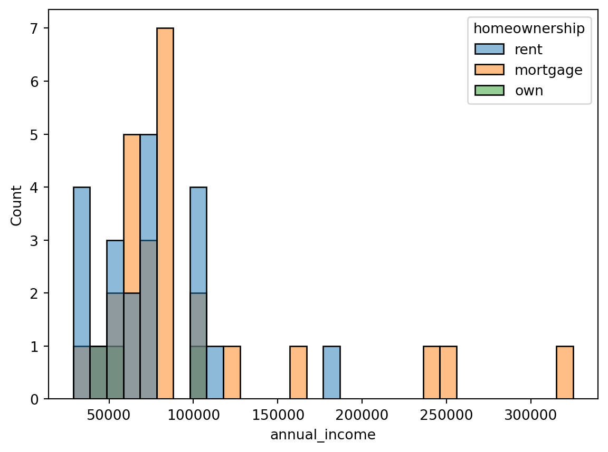
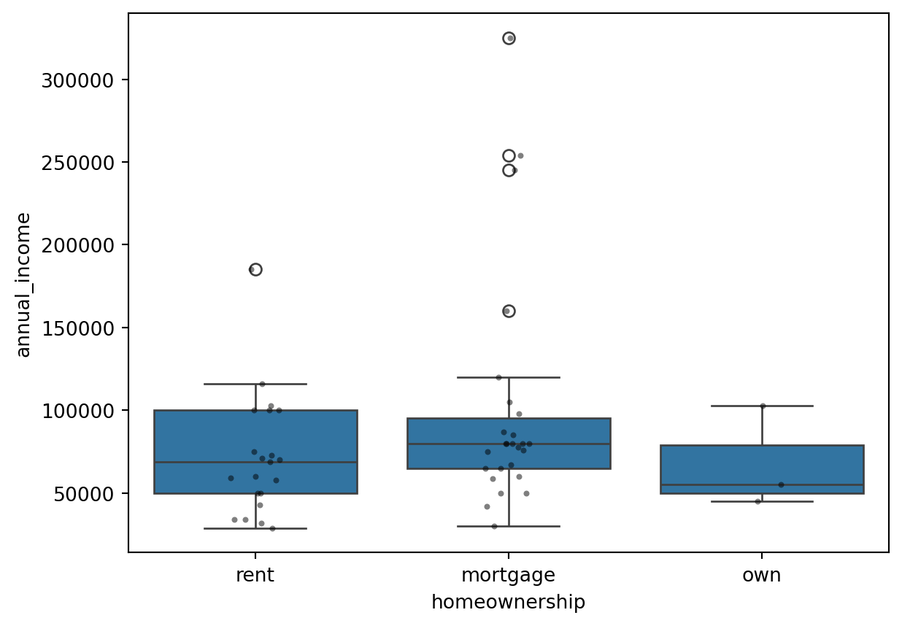
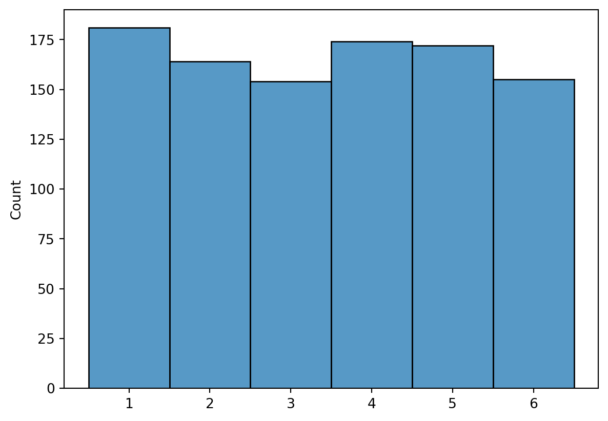
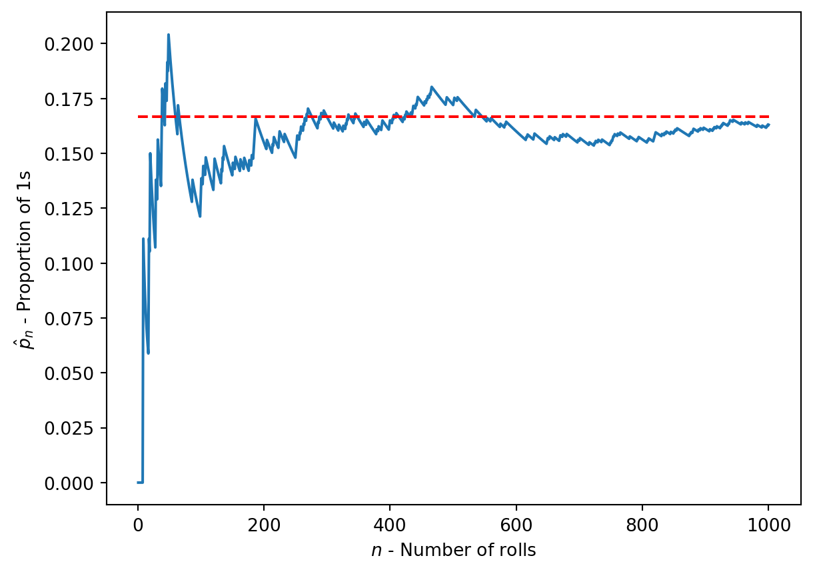
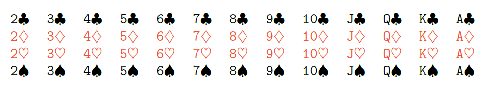
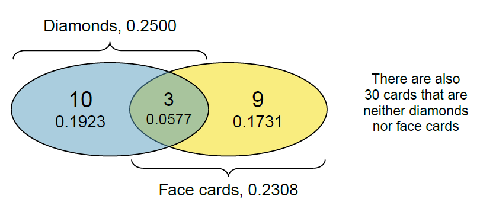
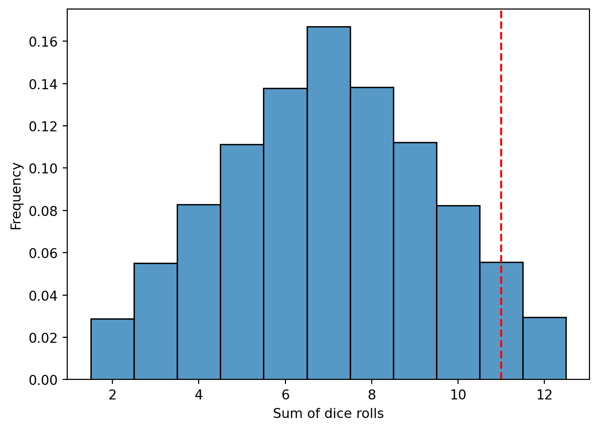

3 Stichproben und Zufallsvariablen
In diesem Abschnitt werden wir uns mit Stichproben und Zufallsvariablen beschäftigen.
Die Auswahl unserer \(n\) Beobachtungen aus einer Grundgesamtheit wird als Stichprobe bezeichnet. Die Grundgesamtheit ist die Menge \(N\) aller möglichen Beobachtungen, die wir untersuchen möchten. Die Stichprobe ist eine Teilmenge der Grundgesamtheit. Im besten Fall zwischen den Beobachtungen in der Stichprobe und der Grundgesamtheit besteht eine Beziehung, die es uns erlaubt, Rückschlüsse auf die Grundgesamtheit zu ziehen.
3.1 Sampling aus einer Population
Als Grundgesamtheit (population) bezeichnen wir die Menge aller möglichen Beobachtungen, die wir untersuchen möchten. Die Stichprobe (sample) ist eine Teilmenge der Grundgesamtheit. Im besten Fall besteht eine Beziehung zwischen den Beobachtungen in der Stichprobe und der Grundgesamtheit, die es uns erlaubt, Rückschlüsse auf die Grundgesamtheit zu ziehen. In der Regel können wir nicht alle Daten einer Grundgesamtheit sammeln, da dies zu aufwändig und teuer wäre. Stattdessen sammeln wir eine Stichprobe von Daten und ziehen Rückschlüsse auf die Grundgesamtheit (vgl. Figure @ref(fig-sec-dataexploratory-sampling-sampling)). Die Stichprobe sollte möglichst repräsentativ für die Grundgesamtheit sein, damit wir verallgemeinern können. Hierzu kommen wir in der Regel, wenn wir eine große Stichprobe ziehen und diese zufällig auswählen.
Allerdings kommt es hier zu einen Unterschied zwischen der Sichtweise der klassischen Statistik und dem Ansatz den den viele Data Scientists verfolgen. In der klassischen Statistik wird die Stichprobe so gewählt, dass sie repräsentativ für die Grundgesamtheit ist.
Note
Wenn wir die Leistungsfähigkeit in Mathematik unter Studierenden auswerten wollen, dann sollten wir unsere Stichprobe nicht nur im Studiengang Mechatronik nachfragen.
Als Data Scientist hingegen, sind wir oft an den Daten interessiert, die uns zur Verfügung stehen. Wir haben keine Möglichkeit, die Grundgesamtheit zu beeinflussen. Wir müssen also mit den Daten arbeiten, die wir haben und uns dabei bewusst sein, dass wir einem Sampling-Bias unterliegen.
Note
Wenn wir die die Lebensdauer eines Werkzeugs auf einer 5-Achs-Fräsmaschinene prognostizieren wollen, können wir die Modelle nicht zwischen Betrieben vergleichen, die die Maschine regelmäßig warten und solchen, die das nicht tun.
3.2 Gruppieren von Daten
Wir könnten in unserem Beispiel von letztem Mal bewusst einen Bias (Verzerrung) bei der Auswahl der Daten einführen.
Wenn wir Beispielweise nur die Einkommen von personen mit einem Kredit auf ihr Haus laufen haben (mortgage) nach ihrem Einkommen fragen und nicht die von Personen die zur Miete wohnen (rent), dann haben wir einen Bias in unseren Daten und erhalten keine repräsentative Stichprobe.
import pandas as pd
import seaborn as sns
# Lesen der CSV-Datei in einen DataFrame
df = pd.read_csv("../_assets/dataexploratory/loan50.csv")
df.columns
sns.histplot(data=df, x="annual_income", bins=30, hue="homeownership")
df.groupby("homeownership")["annual_income"].mean()homeownership
mortgage 99807.692308
own 67666.666667
rent 71928.571429
Name: annual_income, dtype: float64
Note
Inwiefern entsprechen die Daten hier unten Erwartungen?
Im vorliegenden beispiel haben wir Beobachtungen, die eine ordinal skalierte Variable (homeownership) und eine metrisch skalierte Variable (annual_income) enthalten. Wir interessieren und für den Zusammenhang. Die in der letzten Einheit besprochenen Metriken Korrelation und Kausalität sind hier nicht anwendbar, da die Variable homeownership eine ordinal Variable ist.
3.2.1 Boxplot
Für den Vergleich von ordinalen und metrischen Variablen eignet sich der Boxplot. Hier können wir die Verteilung der metrischen Variable für die verschiedenen Ausprägungen der ordinalen Variable darstellen. Die Box zeigt den Median und das erste und dritte Quartil. Die Whisker zeigen die Ausdehnung der Daten und die Punkte sind Ausreißer. Die Whisker werden in der Regel als 1.5-fache der Interquartilsdistanz definiert und starten am 1. bzw. 3. Quartil.
# Box plot
sns.boxplot(data=df, x="homeownership", y="annual_income")
# Actual observations
sns.stripplot(data=df, x="homeownership", y="annual_income", color="black", size=3, alpha=0.5)
Der Boxplot lässt sich einfach berechnen und interpretieren. Allerdings ist er nicht sehr aussagekräftig, wenn die Verteilungen der Daten sehr unterschiedlich sind. In diesem Fall ist es sinnvoll, die Daten zu transformieren oder eine andere Visualisierung zu wählen.
Tip
Eine moderne Alternative zum Boxplot ist der Violinplot. Dieser zeigt die Verteilung der Daten als geschätzte Wahrscheinlichkeitsdichte (für uns bisher geglättetes Histogram). Der Violinplot ist informativer als der Boxplot, da er die Verteilung der Daten besser darstellt. 
3.2.2 Experimente
In der Statistik unterscheiden wir zwischen Beobachtungsstudien und Experimenten. In Beobachtungsstudien beobachten wir die Daten, ohne sie zu beeinflussen. In Experimenten hingegen manipulieren wir die Daten, um einen Effekt zu beobachten. In der Regel sind Experimente aufwendiger und teurer als Beobachtungsstudien, aber sie erlauben uns, Kausalzusammenhänge zu untersuchen.
Note
Eine Beobachtungsstudie könnte longitudinal sein, d.h. über einen längeren Zeitraum Beobachtungen sammeln: z.B. wie sich die Leistungsfähigkeit im Mathematik von Studierenden über die Zeit verändert. Oder Querschnittsstudien, bei denen wir zu einem bestimmten Zeitpunkt Daten sammeln: z.B. wie die Leistungsfähigkeit in Mathematik von Studierenden in verschiedenen Studiengängen ist.
Note
Wenn wir klären wollen, ob unterschiedliche Studiengänge eine Auswirkung auf die Leistungsfähigkeit in Mathematik haben, könnten wir eine experimentelle Studie durchführen, bei der wir Studierende zufällig verschiedenen Studiengängen zuweisen und ihre Leistungsfähigkeit in Mathematik messen. Hierzu müssten wir die Studierenden zufällig auswählen und ihnen zufällig einen Studiengang zuweisen (ethische Bedenken beachten) und ihre Leistungsfähigkeit in Mathematik vor und nach dem Studium messen. Die Messung vor dem Studium könnten wir uns sparen, wenn wir die Studierenden zufällig zuweisen. Gute wissenschaftliche Praxis erfordert, wäre es auch noch eine Kontrollgruppe zu haben, die keinen Studiengang zugeteilt bekommt. Damit kann ausgeschlossen werden, dass die Leistungsfähigkeit in Mathematik durch andere Faktoren (z.B. Alter) beeinflusst wird.
Experimente sind der Goldstandard, um Kausalzusammenhänge zu untersuchen, da hierbei versucht wird einen unabhängigen (welches Studium wird abgeschlossen) zu identifizieren und gezielt zu manipulieren. Alle anderen Variablen werden konstant gehalten oder durch große Stichproben ausgeglichen. Finden wir dann eine Korrelation zwischen dem unabhängigen Variable (Studiengang) und einen abhängigen Variable (Leistungsfähigkeit in Mathe) können wir einen Kausalzusammenhang vermuten.
Im bereich von Data Science gilt häufig ein pragmatischerer but it works Ansatz. Hier wird oft versucht, mit den vorhandenen Daten zu arbeiten und Rückschlüsse zu ziehen. Dies ist in der Regel einfacher und schneller, aber auch weniger zuverlässig.
3.2.2.1 Beispiel: Ist ein Würfel gezinkt?
Stellen wir uns vor, unsere Kolleg:in besteht darauf mit ihrem selbst mitgebrachten Würfel zu spielen. Wir sind uns aber nicht sicher, ob der Würfel gezinkt ist. Wir könnten nun eine Beobachtungsstudie durchführen, indem wir die Augenzahlen des Würfels beobachten und mit unserer Erwartung oder einem fairen Würfel vergleichen. um eine Stichprobe zu erstellen, können wir beide Würfel 1000 mal werfen. Die Würfe des fairen Würfeln nennen wir dabei die Kontrollgruppe.
Wenn wir ein eine Häufigkeitsverteilung, wie in Histogram Figure 3.2 beobachten würden, würden wir misstrauisch werden.
import numpy as np
import seaborn as sns
import matplotlib.pyplot as plt
# Würfeln
np.random.seed(42)
fair_dice_rolls = np.random.randint(1, 7, 1000)
# A manipulated dice that has a higher probability of rolling a 6
other_dice_rolls = np.random.choice([1, 2, 3, 4, 5, 6], 1000, p=[1.9/12, 1.9/12, 1.9/12, 1.9/12, 1.9/12, 2.5/12])
# Histogramm
sns.histplot(fair_dice_rolls, bins=6, discrete=True, color="lightblue", alpha = 0.2, label="Fair Dice")
sns.histplot(other_dice_rolls, bins=6, discrete=True, color="red", alpha = 0.2, label="Manipulated Dice")
# Add ledgend
plt.legend()3.3 Blickpunkte auf Variablen
Wie haben uns nun Variablen (Spalten in tidy data) angeschaut und gesehen und können diese aus verschiedenen Blickwinkeln betrachten.
3.3.1 Skalenniveaus
Skalenniveaus sind eine Möglichkeit, Variablen zu klassifizieren. Es gibt vier Skalenniveaus: nominal, ordinal, metrisch und verhältnisskaliert. Diese Skalenniveaus geben uns Hinweise darauf, welche statistischen Methoden wir verwenden können, um die Daten zu analysieren.
3.3.2 Im Kontext von Experimenten
Im Kontext von Experimenten und Beobachtungsstudien unterscheiden wir zwischen unabhängigen und abhängigen Variablen. Die unabhängige Variable ist die Variable, welche uns als Einflussgröße interessiert. Die abhängige Variable ist die Variable, die wir messen, um den Effekt zu beobachten. Leider gibt es hier je nach Sprache und Fachgebiet unterschiedliche Bezeichnungen. Die folgende Tabelle gibt einen Überblick über verschiedene Bezeichnungen. Später werden wir merken, dass es nicht immer nur genau eine unabhängige und eine abhängige Variable gibt, sondern auch mehrere unabhängige und abhängige Variablen geben kann. Der Einfacheit halber sprechen wir aber zunächst nur im Singular.
| Anwendungsfeld | Unabhängige Variable | Abhängige Variable |
|---|---|---|
| Statistik | Explanatory Variable | Response Variable |
| Machine Learning | Features | Target |
| Experimente | Treatment | Outcome |
| Psychologie | Independent Variable | Dependent Variable |
| Forecasts | Predictor | Predicted Variable |
| Ökonometrie | Explanatory Variable | Dependent Variable |
| Informatik | Input | Output |
| Programming | Argument | Return Value |
| Programming | X |
y |
3.4 Wahrscheinlichkeitsrechnung
Eine weitere Betrachtunsweise von Variablen sind die Prozesse, die zu den Beobachtungen führen. Hierbei unterscheiden wir zwischen deterministischen und zufälligen Prozessen. Deterministische Prozesse führen immer zum gleichen Ergebnis, wenn wir die gleichen Bedingungen haben. Zufällige Prozesse führen zu unterschiedlichen Ergebnissen, auch wenn die Bedingungen gleich sind. Zufällige Prozesse können durch Wahrscheinlichkeiten beschrieben werden.
Important
Hierbei ist es irrelevant, ob ob wir uns das Universum als vorherbestimmt (deteministisch) oder zufällig vorstellen. Zufälligkeit bedeutet uns in der Folge nur, dass wir das Ergebnis nicht a-priori vorhersagen können. Die Zufälligkeit durch einen echten Zufallsprozess (z.B. Würfeln) oder durch eine unvollständige Modellierung (z.B. durch fehlende Variablen) entsteht.
3.4.1 Zufallsvariablen
Eine Zufallsvariable ist eine Variable, die zufällig einen von mehreren verschiedenen Werten annimmt. Wenn wir eine Münze werfen, ist die Zahl, die auf dem Würfel erscheint, eine Zufallsvariable. Zufallsvariablen können diskret oder kontinuierlich sein. Diskrete Zufallsvariablen können nur bestimmte Werte annehmen, während kontinuierliche Zufallsvariablen jeden Wert in einem Intervall annehmen können.
Die Augenzahl eines Würfels ist eine diskrete Zufallsvariable, da sie nur die Werte 1, 2, 3, 4, 5 oder 6 annehmen kann. Wenn wir den Würfel werfen, ist die Augenzahl jedes mal eine zufällige Realisierung der Zufallsvariable.
import numpy as np
import seaborn as sns
# Würfeln
np.random.seed(42)
dice_rolls = np.random.randint(1, 7, 1000)
# Histogramm
sns.histplot(dice_rolls, bins=6, discrete=True)

Änlich verhält es sich bei einem Münzwurf. Hier ist die Zufallsvariable die Seite der Münze, die oben liegt. Diese kann entweder Kopf oder Zahl sein. Damit wir sinnvoll mit dem katregorischen Datentyp umgehen können, können wir die Werte in 0 und 1 umwandeln. Das bedeutet, dass wird aus dem Sample Space (Kopf, Zahl) einen numerischen Wert (0, 1) machen.
Hierzu definieren wir nun einige Begriffe:
- Zufallsexperiment/-Prozess: Ein Experiment, bei dem das Ergebnis zufällig ist. Zufällig bedeutet, dass wir das Ergebnis nicht vorhersagen können. Zum Beispiel das Werfen einer Münze, eines Würfels oder das Ziehen einer Karte aus einem Kartenspiel.
- Ereignisraum (sample space): Die Menge aller möglichen Ergebnisse (outcomes) eines Zufallsexperiments. Zum Beispiel beim Werfen einer Münze ist der Ereignisraum \({\text{Kopf}, \text{Zahl}}\).
- (messbare) Zufallsvariable: Eine Funktion, die jedem Ergebnis eines Zufallsexperiments eine Zahl zuordnet. Zum Beispiel die \(1\) für Kopf und \(0\) für Zahl beim Münzwurf.
3.5 Frequentischtische Definition der Wahrscheinlichkeit
Important
Die Wahrscheinlichkeit eines Ergebnisses ist der Anteil, wie oft das Ergebnis eintreten würde, wenn wir den Zufallsprozess unendlich oft beobachten würden. Die Wahrscheinlichkeit ist als Anteil definiert und nimmt immer Werte zwischen 0 und 1 (einschließlich) an. Sie kann auch als Prozentsatz zwischen 0% und 100% angezeigt werden.
In Figure Figure 3.3 kam die Augenzahl 2 in etwa 167/1000 der Fälle vor. Die Wahrscheinlichkeit, dass die Augenzahl 1 beträgt, ist also 1/6 oder etwa 0,167. Gleiches gibt für die anderen Augenzahlen.
Es is offentsichtlich, dass das bei einer endlichen Anzahl von Beobachtungen nicht immer so sein muss. Werfen wir den Würfel nur einmal, so kann die Augenzahl nur entweder 1, 2, 3, 4, 5 oder 6 sein. Für eine endliche Anzahl von Beobachtungen kann die Wahrscheinlichkeit also nur eine Schätzung sein. Umgekehrt ist die Wahrscheinlichkeit eine Grenzwertbetrachtung, die nur für unendlich viele Beobachtungen gilt.
import numpy as np
import seaborn as sns
import matplotlib.pyplot as plt
nuber_of_rolls = 1000
np.random.seed(12)
dice_rolls = np.random.randint(1, 7, nuber_of_rolls)
# Anteil der 1er bei jedem Schritt
proportion_ones = np.cumsum(dice_rolls == 1) / np.arange(1, nuber_of_rolls+1)
# Plot
sns.lineplot(x=np.arange(1, nuber_of_rolls+1), y=proportion_ones)
sns.lineplot(x=[1, nuber_of_rolls+1], y=[1/6, 1/6], color="red", linestyle="--")
plt.xlabel("$n$ - Number of rolls")
plt.ylabel("$\hat{p}_n$ - Proportion of 1s ")<>:18: SyntaxWarning:
invalid escape sequence '\h'
<>:18: SyntaxWarning:
invalid escape sequence '\h'
/tmp/ipykernel_3085/1774020984.py:18: SyntaxWarning:
invalid escape sequence '\h'
Text(0, 0.5, '$\\hat{p}_n$ - Proportion of 1s ')

Figure Figure 3.4 zeigt den Anteil \(\hat{p}_n\) der Augenzahl 1 bei jedem Schritt \(n\) einer Simulation. Der Anteil konvergiert gegen die Wahrscheinlichkeit von 1/6 oder etwa 0,167.
Der beobeachtete Anteil \(\hat{p}_n\) ist eine Schätzung der Wahrscheinlichkeit \(p\) und wird genauer, je mehr Beobachtungen wir haben. Die Wahrscheinlichkeit \(p\) ist der Grenzwert des Anteils.
Important
Wir werden in der Statistik oft mit Schätzungen arbeiten, da wir nicht unendlich viele Beobachtungen haben. Es ist wichtig, die Unsicherheit unserer Schätzungen zu kennen und zu berücksichtigen. Schätzungen kennzeichnen wir oft mit einem Dach über dem Symbol, z.B. \(\hat{p}\).
Important
Gesetz der großen Zahlen: Mit zunehmender Anzahl von Beobachtungen konvergiert der Anteil der Beobachtungen mit einem bestimmten Ergebnis gegen die Wahrscheinlichkeit dieses Ergebnisses.
Da wir verschiedene Ergebnisse haben, führen wir eine neue Schreibweise ein. Wir schreiben \(P(X = x)\) für die Wahrscheinlichkeit, dass die Zufallsvariable \(X\) (z.B. Münzwürf) den Wert \(x\) annimmt.
Für einen fairen Münzwurf ist \[ P(X = \text{Kopf}) = 0.5, \]
und
\[ P(X = \text{Zahl}) = 0.5. \]
bzw.
\[ P(X = 1) = 0.5, \]
und
\[ P(X = 0) = 0.5. \]
Für einen fairen Würfelwurf ist \[ P(X = 1) = P(X = 2) = P(X = 3) = P(X = 4) = P(X = 5) = P(X = 6) = 1/6. \]
Die Summe der Wahrscheinlichkeiten aller möglichen Ergebnisse eines Zufallsexperiments ist immer 1. Das bedeutet, dass mindestens eines der möglichen Ergebnisse eintreten muss. Vergleicher dies mit der Fläche unter einem normalisieren Histogramm oder einer Dichtefunktion.
3.5.1 Disjunkte bzw. Sich-Ausschließende Ereignisse
Zwei Ereignisse \(A\) und \(B\) sind disjunkt oder sich ausschließend, wenn sie nicht gleichzeitig eintreten können. Das bedeutet, dass wenn \(A\) eintritt, \(B\) nicht eintreten kann und umgekehrt. Beispielsweise kann bei einem Wurf mit einem fairen Würfel die Augenzahl nicht gleichzeitig 1 und 2 sein. Die Ereignisse “Augenzahl ist 1” und “Augenzahl ist 2” sind sich ausschließend.
Die Wahrscheinlichkeit, dass eines der beiden Ereignisse auftritt, ist die Summe der Wahrscheinlichkeiten der beiden Ereignisse. Als Notation schreiben wir \(P(A \cup B)\) für die Wahrscheinlichkeit, dass eines der beiden Ereignisse eintritt. Dies entspricht einem logischen oder. Wir lesen A vereinigt B.
Für disjunkte Ereignisse gilt:
\[ P(X=1 \cup X=2) = P(X=1) + P(X=2) = \frac{1}{6} + \frac{1}{6} = \frac{1}{3}. \]
Important
Die Additionsregel besagt, dass die Wahrscheinlichkeit, dass eines von zwei sich ausschließenden Ereignissen (\(A\), \(B\)) eintritt, die Summe der Wahrscheinlichkeiten der beiden Ereignisse ist.
\[ P(A \cup B) = P(A) + P(B). \]
Bzw. für mehrere sich ausschließende Ereignisse (\(A_*\)):
\[ P(A_1 \cup A_2 \cup ... \cup A_n ) = P(A_1) + P(A_2) + ... + P(A_n). \]
3.5.1.1 Beispiel
Im Datensatz der Kredite in Kapitel 2 beschreibt die Variable homeownership, ob der Kreditnehmer mietet, eine Hypothek hat oder Eigentümer seiner Immobilie ist. Von den 10.000 Kreditnehmern mieteten 3858, 4789 hatten eine Hypothek und 1353 besaßen ihr Zuhause.
import pandas as pd
df = pd.read_csv("../_assets/dataexploratory/loan50.csv")
print(f"Number of Observations: {df["homeownership"].shape[0]}")
print(df["homeownership"].value_counts())Number of Observations: 50
homeownership
mortgage 26
rent 21
own 3
Name: count, dtype: int64- Sind die Ergebnisse Miete, Hypothek und Eigentum disjunkt?
- Bestimmen Sie den Anteil der Kredite mit dem Wert Hypothek und Eigentum separat.
- Verwenden Sie die Additionsregel für disjunkte Ergebnisse, um die Wahrscheinlichkeit zu berechnen, dass ein zufällig ausgewählter Kredit aus dem Datensatz für jemanden ist, der eine Hypothek hat oder Eigentümer seines Hauses ist.
- Ja, die Ergebnisse sind disjunkt, da ein Kreditnehmer nur eine der drei Kategorien haben kann.
- Der Anteil der Kredite mit Hypothek beträgt \(\frac{26}{50}\) und der Anteil der Kredite mit Eigentum beträgt \(\frac{3}{50}\).
- Die Wahrscheinlichkeit, dass ein zufällig ausgewählter Kreditnehmer eine Hypothek hat oder Eigentümer seines Hauses ist, beträgt \(\frac{26}{50}\) + \(\frac{3}{50}\) = \(\frac{29}{50}\). Dies entspricht der Wahrscheinlichkeit, dass ein zufällig ausgewählter Kreditnehmer nicht mietet.
3.5.2 Das Komplement eines Ereignisses
Das Komplement eines Ereignisses \(A\) ist das Ereignis, dass \(A\) nicht eintritt. Das Komplement von \(A\) wird als \(A^c\) oder \(\bar{A}\) bezeichnet. Das Komplement eines Ereignisses ist das Ereignis, dass alle anderen Ergebnisse eintreten, die nicht \(A\) sind. Das Komplement eines Ereignisses ist disjunkt zu diesem Ereignis.
Die Wahrscheinlichkeit des Komplements eines Ereignisses ist die Wahrscheinlichkeit, dass das Ereignis nicht eintritt. Die Wahrscheinlichkeit des Komplements eines Ereignisses ist \(1 - P(A)\).
Beispielsweise ist die Wahrscheinlichkeit, dass die Augenzahl eines fairen Würfels nicht 1 ist,
\[ 1 - P(X=1) = 1 - \frac{1}{6} = \frac{5}{6}. \]
Die Summe der Wahrscheinlichkeiten eines Ereignisses und seines Komplements ist immer 1. Das bedeutet, dass entweder das Ereignis oder sein Komplement eintreten muss.
3.5.3 Nicht-disjunkte Ereignisse
Nicht immer haben wir den Luxus, disjunkte Ereignisse zu betrachten. In diesem Fall können die Ereignisse überlappen. Beispielsweise wollen wir beim Kartenspiel wissen, wie hoch die Wahrscheinlichkeit ist, dass wir eine Karte mit einem Bild (Face) oder einer Karo-Farbe (Diamond) ziehen. Die Ereignisse “Bild” und “Karo” sind nicht disjunkt, da es Karten gibt, die beides sind. Wenn wird die Wahrscheinlichkeiten einfach addieren, zählen wir die Karten, die beides sind, doppelt und überschätzen die Wahrscheinlichkeit.

Um um das zu verbildlichen können wie die Ereignisse in einem Venn-Diagramm darstellen. Hierin werden alle Ereignisse (z.B. Farbe ist Karo bzw. Karte ist Bildkarte) in einem Diagramm dargestellt. Die Schnittmenge (als \(\cap\) geschrieben) der beiden Ereignisse ist die Menge der Karten, die beides sind. Dies entspricht dem logischen und und wird als Schnitt bezeichnet.
Die Vereinigungsmenge (logisches oder / \(\cup\)) ist die Menge aller Karten, die entweder das eine oder das andere Ereignis sind.

Von den \(N=52\) Karten sind \(12\) Bildkarten (Bube, Dame, König) und \(13\) Karo-Karten. Davon sind \(k=3\) Karten sowohl Bildkarten als auch Karo-Karten. Die Wahrscheinlichkeit, dass eine Karte entweder eine Bildkarte oder eine Karo-Karte ist, ist die Summe der Wahrscheinlichkeiten der beiden Ereignisse abzüglich der Wahrscheinlichkeit des Schnitts:
\[ P(\text{Bild} \cup \text{Karo}) = P(\text{Bild}) + P(\text{Karo}) - P(\text{Bild} \cap \text{Karo}). = \frac{12}{52} + \frac{13}{52} - \frac{3}{52} = \frac{22}{52}. \]
Hierraus können wir die Additionsregel für nicht-disjunkte Ereignisse formulieren:
Important
Die Generelle Additionsregel besagt, dass die Wahrscheinlichkeit, dass eines von zwei Ereignissen (\(A\), \(B\)) eintritt, die Summe der Wahrscheinlichkeiten der beiden Ereignisse ist, abzüglich der Wahrscheinlichkeit, dass beide Ereignisse eintreten.
\[ P(A \cup B) = P(A) + P(B) - P(A \cap B). \]
3.5.3.1 Beispiel
Sei \(A\) ein Ereignis, bei dem zwei faire Würfel geworfen werden und dabei die Summe der Augenzahl kleiner als 12 ist.
- Was ist das Komplement von \(A\)?
- Wie groß ist die Wahrscheinlichkeit von \(A\)?
- Was ist \(P(A^c)\)?
Let A represent the event where we roll two dice and their total is less than 12. (a) What does the event Ac represent? (b) Determine P(Ac) from Figure 3.5 on page 87. (c) Determine P(A).15
- Das Komplement von \(A\) ist das Ereignis, bei dem die Summe der Augenzahl 12 oder mehr beträgt.
- Die Wahrscheinlichkeit von \(A\) ist die Summe der Wahrscheinlichkeiten der Ergebnisse, bei denen die Summe der Augenzahl kleiner als 12 ist. Das sind die Ergebnisse 2 bis 11.
Wir müssen die Wahrscheinlichkeiten der einzelnen Ergebnisse addieren:
Sei \(W_1\) das Ereignis von Würfel 1 und \(W_2\) das Ereignis von Würfel 2. Wir können nun eine Tabelle bauen, in denen wir sammeln, welche Ereignisse für welche Augenzahlen sorgen:
| \(A = W_1 + W_2\) | Mögliche Kombinationen |
|---|---|
| 2 | \((W_1=1 \cap W_2=1)\) |
| 3 | \((W_1=1 \cap W_2=2) \cup (W_1=2 \cap W_2=1)\) |
| 4 | \((W_1=1 \cap W_2=3) \cup (W_1=2 \cap W_2=2) \cup (W_1=3 \cap W_2=1)\) |
| 5 | \((W_1=1 \cap W_2=4) \cup (W_1=2 \cap W_2=3) \cup (W_1=3 \cap W_2=2) \cup (W_1=4 \cap W_2=1)\) |
| 6 | \((W_1=1 \cap W_2=5) \cup (W_1=2 \cap W_2=4) \cup (W_1=3 \cap W_2=3) \cup (W_1=4 \cap W_2=2) \cup (W_1=5 \cap W_2=1)\) |
| 7 | \((W_1=1 \cap W_2=6) \cup (W_1=2 \cap W_2=5) \cup (W_1=3 \cap W_2=4) \cup (W_1=4 \cap W_2=3) \cup (W_1=5 \cap W_2=2) \cup (W_1=6 \cap W_2=1)\) |
| 8 | \((W_1=2 \cap W_2=6) \cup (W_1=3 \cap W_2=5) \cup (W_1=4 \cap W_2=4) \cup (W_1=5 \cap W_2=3) \cup (W_1=6 \cap W_2=2)\) |
| 9 | \((W_1=3 \cap W_2=6) \cup (W_1=4 \cap W_2=5) \cup (W_1=5 \cap W_2=4) \cup (W_1=6 \cap W_2=3)\) |
| 10 | \((W_1=4 \cap W_2=6) \cup (W_1=5 \cap W_2=5) \cup (W_1=6 \cap W_2=4)\) |
| 11 | \((W_1=5 \cap W_2=6) \cup (W_1=6 \cap W_2=5)\) |
| 12 | \((W_1=6 \cap W_2=6)\) |
Wir wissen, wie wir \(P(W_1=6)\) und \(P(W_2=6)\) einzeln ausrechen. Was uns aktuell noch fehlt ist wie wir die Wahrscheinlichkeit \(P(W_1=x \cap W_2=y)\) ausrechnen, die uns sagt, wie wahrscheinlich es ist, dass zwei 6er gewürfelt werden. Wenn wir diese hätten könnten wie diese als Ereignisse zusammenzählen und die Wahrscheinlichkeit über die Additionregel berechnen. Was wird aber aus der Tabelle mitnehmen können ist, dass die Wahrscheinlichkeit für die Augenzahl \(P(A=2)=P(W_1=1) \cdot P(W_2=1)\) ist und im vergleich zu \(P(A=7)\) wohl eine kleinere Wahrscheinlichkeit hat.
Immer wenn die Wahrscheinlichkeitsberechung etwas schwieriger wird können wir auf die Simulation zurückgreifen. Bei einer sogenannten Monte-Carlo-Simulation führen wir das Experiment mehrfach durch und zählen die Anzahl der Fälle, die das Ereignis erfüllen. Die Wahrscheinlichkeit ist dann die Anzahl der Fälle, die das Ereignis erfüllen, geteilt durch die Anzahl der Durchläufe.
import numpy as np
import pandas as pd
df = pd.DataFrame(np.random.randint(1, 7, (10000, 2)), columns=["W1", "W2"])
# Summe der Augenzahlen
df["Sum"] = df["W1"] + df["W2"]
# Wahrscheinlichkeit
p = (df["Sum"] < 12).mean()
print(f"Die Wahrscheinlichkeit, dass die Summe der Augenzahlen kleiner als 12 ist, beträgt {p:.2f}")Die Wahrscheinlichkeit, dass die Summe der Augenzahlen kleiner als 12 ist, beträgt 0.97import seaborn as sns
import matplotlib.pyplot as plt
sns.histplot(df["Sum"], bins=11, discrete=True, stat = 'density')
plt.axvline(11, color="red", linestyle="--")
plt.xlabel("Sum of dice rolls")
plt.ylabel("Frequency")Text(0, 0.5, 'Frequency')

Figure Figure 3.7 zeigt die Verteilung der Summe der Augenzahlen bei einem Wurf mit zwei Würfeln. Die Wahrscheinlichkeit, dass die Summe der Augenzahlen kleiner als 12 ist, beträgt 0,97.
- Die Wahrscheinlichkeit, dass die Summe der Augenzahlen 12 oder mehr beträgt, ist \(1 - P(A) = 1 - 0.97 = 0.03\).
3.6 Unabhängige Ereignisse
Zwei Ereignisse \(A\) und \(B\) sind unabhängig, wenn das Eintreten eines Ereignisses nicht das Eintreten des anderen Ereignisses beein. Das bedeutet, dass die Wahrscheinlichkeit eines Ereignisses nicht von dem anderen Ereignis abhängt. Ein typisches Beispiel für unabhängige Ereignisse ist das Werfen einer Münze und das Werfen eines Würfels. Das Ergebnis des Münzwurfs beeinflusst das Ergebnis des Würfelwurfs nicht. Gleiches gibt dafür, dass wird wie im Beispiel oben die Augenzahl zweiter Würfel betrachten. Das Ergebnis des ersten Würfels beeinflusst das Ergebnis des zweiten Würfels nicht.
Die Wahrscheinlichkeit, dass zwei unabhängige Ereignisse eintreten, ist das Produkt der Wahrscheinlichkeiten der beiden Ereignisse. Die Wahrscheinlichkeit, dass zwei unabhängige Ereignisse eintreten, ist \(P(A \cap B) = P(A) \cdot P(B)\).
Important
Die Multiplikationsregel für unabhängige Ereignisse besagt, dass die Wahrscheinlichkeit, dass zwei unabhängige Ereignisse (\(A\), \(B\)) eintreten, das Produkt der Wahrscheinlichkeiten der beiden Ereignisse ist.
\[ P(A \cap B) = P(A) \cdot P(B). \]
Bzw. für mehrere unabhängige Ereignisse (\(A_*\)):
\[ P(A_1 \cap A_2 \cap ... \cap A_n ) = P(A_1) \cdot P(A_2) \cdot ... \cdot P(A_n). \]
3.6.1 Beispiel 1
Mit diesem Puzzelstein können wir nun auch die Wahrscheinlichkeit jeder Augenzahl beim Würfeln berechnen. Die Ergebnisse der beiden Würfel 1 und 2 sind unabhängig und können deshalb multipliziert werden.
| \(A = W_1 + W_2\) | Mögliche Kombinationen |
|---|---|
| 2 | \(W_1=1, W_2=1\) |
| 3 | \(W_1=1, W_2=2\), \(W_1=2, W_2=1\) |
| 4 | \(W_1=1, W_2=3\), \(W_1=2, W_2=2\), \(W_1=3, W_2=1\) |
3.6.2 Beispiel 2
Wahr oder falsch. Bestimmen Sie, ob die folgenden Aussagen wahr oder falsch sind, und erklären Sie Ihre Begründung. - 1. Wenn eine faire Münze viele Male geworfen wird und die letzten acht Würfe alle Kopf sind, dann ist die Wahrscheinlichkeit, dass der nächste Wurf Kopf ist, etwas weniger als 50%. - 2. Das Ziehen einer Bildkarte (Bube, Dame oder König) und das Ziehen einer roten Karte aus einem vollständigen Kartenspiel sind sich gegenseitig ausschließende Ereignisse. - 3. Das Ziehen einer Bildkarte und das Ziehen eines Asses aus einem vollständigen Kartenspiel sind sich gegenseitig ausschließende Ereignisse.
- Falsch. Die Wahrscheinlichkeit, dass eine faire Münze Kopf zeigt, beträgt 50%. Die Ergebnisse der vorherigen Würfe beeinflussen die Wahrscheinlichkeit des nächsten Wurfs nicht, da die Würfe unabhängig sind.
- Falsch. Bildkarten können rote oder schwarze Farben haben. Die Ereignisse “Bildkarte” und “rote Karte” sind nicht disjunkt.
- Wahr, da ein Ass keine Bildkarte ist.
3.6.3 Bedingte Wahrscheinlichkeit
Bedingte Wahrscheinlichkeiten geben uns die Wahrscheinlichkeit eines Ergebnisses unter der Bedinung an, dass ein anderes Ereignis eingetreten ist oder ebenfall eintreten würde.
Wenn wir uns das das Kartenbeispiel vorstellen können wir uns Fragen, wie wahrscheinlich es ist eine Bildkarte zu ziehen, wenn wir schon wissen, dass die Karte eine Karo-Karte ist. Aus dem Venn-Diagramm ergibt sich, dass die Wahrscheinlichkeit hierfür wie folgt lautet:
\[ P(\text{Bild} | \text{Karo}) = \frac{3}{13}. \]
Das \(|\) wird hierbei als “gegeben” gelesen. Die Abhängigkeit lässt sich in einer Kreuztballe (contingency table) darstellen, die die Häufigkeiten aller Ereigniss-Kombinationen gegenüberstellt.
import pandas as pd
df = pd.read_csv("../_assets/dataexploratory/loan50.csv")
# Create a contingency table
contingency_table = pd.crosstab(df['homeownership'], df['has_second_income'])
# Display the result
print(contingency_table)has_second_income False True
homeownership
mortgage 20 6
own 3 0
rent 19 2Hierraus lässt sich z.B. ablegen, dass es 26 Haus-Kredite gibt,bei denen der Kreditnehmer eine Hypothek hat. Von diesen haben 6 ein zweites Einkommen. Die bedingte Wahrscheinlichkeit, dass ein Kreditnehmer mit einer Hypothek ein zweites Einkommen hat, beträgt also \(P(\text{Zweiteinkommen} | \text{Hypothek}) = \frac{6}{26}\).
Important
Die bedingte Wahrscheinlichkeit eines Ereignisses \(A\) unter der Bedingung, dass ein anderes Ereignis \(B\) eingetreten ist, ist die Wahrscheinlichkeit, dass \(A\) eintritt, wenn wir wissen, dass \(B\) eingetreten ist. Die bedingte Wahrscheinlichkeit wird als \(P(A|B)\) geschrieben und berechnet sich als:
\[ P(A|B) = \frac{P(A \cap B)}{P(B)}. \]
Im Fall unseres Beispiels ist die bedingte Wahrscheinlichkeit, dass ein Kreditnehmer ein zweites Einkommen hat, wenn er eine Hypothek hat,
\[ P(\text{Zweiteinkommen} | \text{Hypothek}) = \frac{\text{Zweiteinkommen} \cap \text{Hypothek}}{\text{Hypothek}}=\frac{\frac{6}{50}}{\frac{26}{50}} = \frac{6}{26}$. \]
Warning
Die Wahrscheinlichkeit von \(P(A \cap B)\) kann nicht einfach mittels der Multiplikationsregel berechnet werden, da die Ereignisse nicht unabhängig sind. Stattdessen muss sie aus den beobachteten Häufigkeiten berechnet werden.
Important
Summe von bedingten Wahrscheinlichkeiten
Seien \(A_1, ..., A_k\) alle disjunkten Ergebnisse für eine Variable oder einen Prozess. Dann gilt für ein Ereignis \(B\), möglicherweise für eine andere Variable oder einen anderen Prozess:
\[ P(A_1|B) + · · · + P(A_k|B) = 1 \]
Die Regel für Komplemente gilt auch, wenn ein Ereignis und sein Komplement unter denselben Informationen bedingt sind:
\[ P(A|B) = 1 − P(A^c|B). \]
3.6.4 Beispiel

Wie hoch ist die Wahrscheinlichkeit, dass ein Patient Krebs hat, wenn wir folgendes wissen:
- Die Wahrscheinlechkeit, dass eine Person Krebs hat, beträgt 0.1%.
- Im Falle, dass eine Person Krebs hat, beträgt die Wahrscheinlichkeit, dass der Test positiv ist, 99%. (dies nennt man auch ist die Sensitivität des Tests)
- Im Falle, dass eine Person keinen Krebs hat, beträgt die Wahrscheinlichkeit, dass der Test positiv ist, 5%. (dies nennt man auch ist die Spezifität des Tests)
Zunächst können wir das ganze als Baumdiagramm darstellen. Hierbei ist die Wahrscheinlichkeit, dass eine Person Krebs hat \(P(\text{Krebs}) = 0.001\) und die Wahrscheinlichkeit, dass eine Person keinen Krebs hat \(P(\text{Kein Krebs}) = 0.999\). Die Wahrscheinlichkeit, dass der Test positiv ist, wenn eine Person Krebs hat, ist \(P(\text{Positiv} | \text{Krebs}) = 0.99\) und die Wahrscheinlichkeit, dass der Test positiv ist, wenn eine Person keinen Krebs hat, ist \(P(\text{Positiv} | \text{Kein Krebs}) = 0.05\).
graph LR
U[Person] -->|0.001| A[Krebs]
U[Person] -->|0.999| D[Kein Krebs]
A[Krebs] -->|0.99| B[Positiv]
A[Krebs] -->|0.01| C[Negativ]
D[Kein Krebs] -->|0.05| E[Positiv]
D[Kein Krebs] -->|0.95| F[Negativ]
Wir können nun die alle Pfade, die mit einem positiven Test enden, zusammenzählen und die Wahrscheinlichkeit berechnen, dass eine Person Krebs hat, wenn der Test positiv ist. Wir dürfen dieses addieren, da die Pfade disjunkt sind.
Für den oberen Pfad ist die Wahrscheinlichkeit, dass eine Person Krebs hat und der Test positiv ist, \(P(\text{Krebs} \cap \text{Positiv}) = P(\text{Krebs}) \cdot P(\text{Positiv} | \text{Krebs}) = 0.001 \cdot 0.99 = 0.00099\).
Für den unteren Pfad ist die Wahrscheinlichkeit, dass eine Person keinen Krebs hat und der Test positiv ist, \(P(\text{Kein Krebs} \cap \text{Positiv}) = P(\text{Kein Krebs}) \cdot P(\text{Positiv} | \text{Kein Krebs}) = 0.999 \cdot 0.05 = 0.04995\).
Die Wahrscheinlichkeit, dass der Test positiv ist, beträgt also \(P(\text{Positiv}) = 0.00099 + 0.04995 = 0.05094\).
Trotz eines positiven Test ist es also sehr unwahrscheinlich, dass eine Person Krebs hat. Die Wahrscheinlichkeit, dass eine Person Krebs hat, wenn der Test positiv ist, beträgt \(P(\text{Krebs} | \text{Positiv}) = \frac{P(\text{Krebs} \cap \text{Positiv})}{P(\text{Positiv})} = \frac{0.00099}{0.05094} = 0.0194\).
In der Realität werden Personen mit einem positiven Testergebnis oft weiteren Tests unterzogen, um die Wahrscheinlichkeit zu erhöhen, dass die Diagnose korrekt ist. Dies wird als Bestätigungstest bezeichnet. Zudem werden nur Personen getestet, wenn es schon Anzeichen für eine Erkrankung gibt. Dies wird als Prävalenz bezeichnet und ist dann in der Stichprobe höher als in der Gesamtbevölkerung.
3.6.5 Satz von Bayes
Der Satz von Bayes ist ein mathematischer Satz, der uns erlaubt, die Wahrscheinlichkeit eines Ereignisses unter der Bedingung eines anderen Ereignisses zu berechnen. Der Satz von Bayes ist besonders nützlich, wenn wir die bedingte Wahrscheinlichkeit eines Ereignisses unter der Bedingung eines anderen Ereignisses kennen, aber die bedingte Wahrscheinlichkeit des anderen Ereignisses unter der Bedingung des ersten Ereignisses berechnen möchten.
Der Satz von Bayes lautet:
\[ P(A|B) = \frac{P(B|A) \cdot P(A)}{P(B)}. \]
Der Satz von Bayes kann auch als Multiplikation der bedingten Wahrscheinlichkeit eines Ereignisses unter der Bedingung eines anderen Ereignisses und der Wahrscheinlichkeit des anderen Ereignisses geteilt durch die Wahrscheinlichkeit des ersten Ereignisses geschrieben werden.
Der Satz von Bayes wird oft in der Medizin, der Wirtschaft und der Technik verwendet, um die Wahrscheinlichkeit eines Ereignisses zu berechnen, wenn wir die Wahrscheinlichkeit eines anderen Ereignisses kennen. Hierbei wird auch von Prior, Likelihood und Posterior gesprochen. Der Prior ist die Wahrscheinlichkeit des Ereignisses, bevor wir die Daten haben. Der Likelihood ist die Wahrscheinlichkeit der Daten unter der Bedingung des Ereignisses. Der Posterior ist die Wahrscheinlichkeit des Ereignisses unter der Bedingung der Daten.
Tip
Youtube-Videos: - Three Blue One Brown: Bayes Theorem - Veritasium: The Bayesian Trap
Assoziationsanalyse mit A-Priori-Algorithmus
Die Assoziationsanalyse ist ein Verfahren, um Zusammenhänge in Daten zu finden. Ein bekannter Algorithmus ist der A-Priori-Algorithmus, der z.B. in für Predictive Maintainance oder in der Warenkorbanalyse verwendet wird. Der A-Priori-Algorithmus findet heraus, welche Produkte oft zusammen gekauft werden. Ein Beispiel ist, dass Kunden, die Windeln kaufen, oft auch Bier kaufen.